Sesión 01 · Martes 18 de agosto de 2026
Fundamentos de single-cell. Tecnologías y plataformas
Bioinformática y Estadística 3 · Licenciatura en Ciencias Genómicas
ENES Juriquilla, UNAM · Semestre 2027-1
Yalbi Itzel Balderas Martínez (30 min)
Luis Alberto Meza Cova (90 min)
José Antonio Ovando Ricárdez (Dinámica en Miro)
Laboratorio de Biología Computacional · INER

Antes de empezar
Objetivo de la sesión
Distinguir qué preguntas biológicas responde el análisis de célula única y cuáles no; ubicar las etapas del flujo completo de análisis así como sus modos de falla; y comparar las principales tecnologías de secuenciación de célula única para elegir de forma justificada la adecuada según i) la pregunta biológica, ii) el tipo de muestra y iii) el presupuesto.
Cómo está armada
Sesión teórica de 120 minutos.
- 6 bloques
- Se alterna explicación con actividades
Desarrollo
¿Qué fue lo que pasó?
![Dos resultados del mismo tejido, uno al lado del otro, con un signo de interrogación entre ellos. A la izquierda, bulk: un número por muestra, dos barras que comparan antes y después, la de después mucho más baja, y una flecha que marca la caída; al pie, que el promedio del gen X baja. A la derecha, célula única: un número por célula, treinta y dos células dibujadas todas iguales; al pie, que ninguna célula bajó su expresión del gen X. En medio, la leyenda de que los dos resultados están bien medidos.](assets/images/caso-dos-resultados.svg)
Importante
Un experimento de RNA-seq tipo bulk reportó una disminución de expresión en un gen tras un tratamiento. Al repetirlo en célula única se descubre que este gen no bajó su expresión en ninguna célula.
Un promedio escondió quién estaba ahí
| Antes | Después | |
|---|---|---|
| Población A (gen X alto) | 70 % | 30 % |
| Población B (gen X bajo) | 30 % | 70 % |
| Promedio del tejido | alto | bajo |
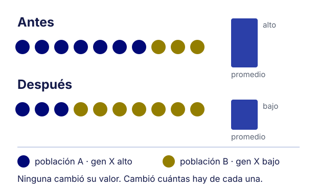
- Ninguna población celular cambió la expresión del gen X, simplemente cambiaron las proporciones, es decir el promedio pesa por abundancia celular, y por eso se movió
Por qué importa la diferencia
Importante
La conclusión original no era falsa en los datos, sino falsa en la interpretación: lo que cambió fue la abundancia relativa de las poblaciones, no la expresión.
- Esta es la situación más frecuente por la que un laboratorio pasa de bulk a célula única
- «Cambió la expresión» y «cambió la composición» llevan a experimentos de seguimiento distintos
- Por lo tanto, la unidad de medición decide la pregunta que se puede contestar
Pero, ¿qué es la secuenciación de célula única?
«Single-cell sequencing is a technology that enables the obtention of transcriptome profiles per cell. We can obtain a better resolution of the molecular events inside a cell than the previous experiments using bulk sequencing.»
Villaseñor-Altamirano, Balderas-Martínez y Medina-Rivera, capítulo 8 de Rigor and Reproducibility in Genetics and Genomics: Villaseñor-Altamirano et al. (2024)
Una muestra, o muchas células
![Comparación en dos paneles del mismo tejido, con dos poblaciones celulares en azul y oro. A la izquierda, bulk: el tejido se mezcla en un solo tubo y produce una tabla de una sola columna, el promedio del tejido; al pie, que no se puede distinguir si cambió la expresión o si cambió cuántas células hay de cada tipo. A la derecha, célula única: el mismo tejido se disocia y cada célula queda en su propia gota, produciendo una matriz de muchas columnas, una distribución entre células; al pie, que cuánto expresa cada célula y cuántas hay de cada tipo son dos preguntas y ahora son dos datos.](assets/images/bulk-contra-celula-unica.svg)
Diecisiete años, cuatro saltos
![Línea del tiempo de 2009 a 2026 en cuatro etapas. Prueba de concepto: 2009, Tang y colaboradores secuencian el transcriptoma completo de una sola célula; 2013, Smart-seq2 da longitud completa en pocas células. Escala por gotas: 2015, Drop-seq e inDrop encierran una célula por gota y pasan de decenas a miles, publicados en el mismo número de Cell; 2016, el Chromium de 10x convierte la gota en un producto comercial. Consolidación: 2017, sci-RNA-seq logra escala por indexado combinatorial sin encerrar nada; 2018, la revisión de Hedlund y Deng. Hoy: 2020, Smart-seq3 combina longitud completa con identificadores moleculares únicos; 2026, lectura larga para isoformas y alelos, y una comparación de nueve plataformas comerciales.](assets/images/historia-celula-unica.svg)
Tang et al. (2009) · Picelli et al. (2014) · Macosko et al. (2015) · Klein et al. (2015) · Cao et al. (2017) · Hedlund & Deng (2018) · Hagemann-Jensen et al. (2020) · Wen & Tang (2026) · Elz et al. (2026)
Lo que la unidad de medición decide
- En bulk, cada columna es una muestra: un tejido molido, y se mide un promedio
- En célula única, cada columna es una célula: se mide una distribución
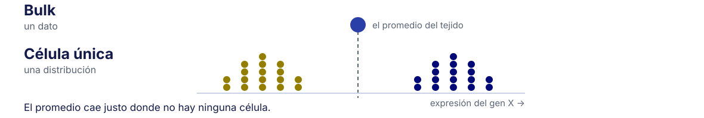
Importante
Ningún reanálisis recupera lo que el diseño no midió.
Tres formas de medir el mismo tejido
| Bulk | Célula única | Espacial | |
|---|---|---|---|
| Unidad | muestra | célula o núcleo | punto o célula con coordenadas |
| Resuelve | expresión promedio | heterogeneidad y composición | organización en el tejido |
| Pierde | quién expresa qué | dónde estaba cada célula | profundidad o resolución celular |
| Costo | bajo | alto | alto |
Comparación de las tres modalidades: Luecken & Theis (2019)
Cuándo NO conviene usar la tecnología de secuenciación de RNA de célula única
- La pregunta es «¿cambia X entre dos condiciones?» y no importa qué tipo celular
- Hay pocas muestras y muchas condiciones: la potencia la dan las réplicas biológicas, no las células
- El presupuesto alcanza para realizar secuenciación de RNA-seq de célula única sin réplicas
Advertencia
Una sola muestra con 10 000 células sigue siendo n = 1.
El flujo completo, y dónde falla cada etapa
| Etapa | Modo de falla típico | Se ve en |
|---|---|---|
| Muestra y disociación | firma de estrés, sesgo de composición | S05 |
| Captura y secuenciación | dobletes, RNA ambiental, poca profundidad | S05 |
| FASTQ → matriz | referencia o química equivocada | S03 |
| Llamado de células | gotas vacías tomadas por células | S04 |
| Control de calidad | umbrales que borran poblaciones | S05 |
| Integración | lote confundido con condición | S07 |
Para empezar: ¿qué limita más?
menti.com/alqdwiujf54r
¿Qué limita más un experimento de célula única?
- El presupuesto
- La calidad de la muestra
- El software de análisis
- La pregunta que se hizo
Anónimo y sin cuenta. Déjalo abierto: se usa tres veces más.
¿Cómo se etiqueta una molécula antes de mezclarla?
Al lisar la célula, el RNA de todas las células queda en el mismo lugar.
- Ninguna molécula lleva escrito de dónde vino
- Hay que etiquetarla antes de mezclar
¿Cómo lo harías tú?
menti.com/alqdwiujf54r
Tienes que etiquetar cada molécula antes de mezclarla.
¿Con qué? Una o dos palabras, no una frase.
Tres maneras de poner la etiqueta
| Dónde se pone la etiqueta | |
|---|---|
| La gota | dentro de un volumen cerrado, con una perla |
| El pozo | en una reacción propia, en placa |
| Sin encierro | por rondas sucesivas de reparto y marcado |
Las tres contestan la misma pregunta. Cambia cuándo y dónde.
La gota: encerrar la célula en un volumen propio
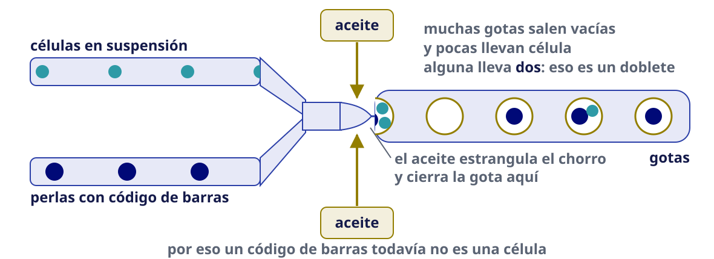
Todo esto ocurre en un canal del chip: una suspensión, sus gotas, una librería. El chip lleva ocho, y el presupuesto se cuenta en canales.
Plataforma de gota: Zheng et al. (2017)
La perla y sus oligos
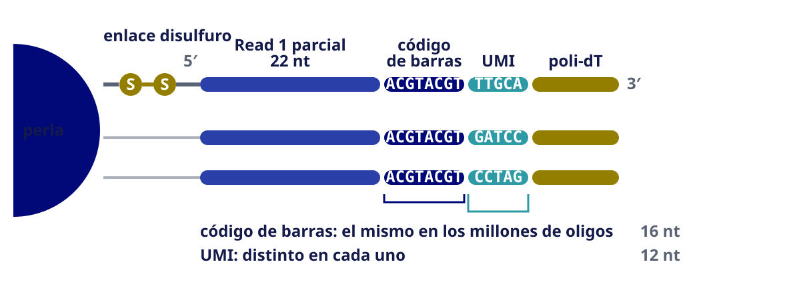
Plataforma de gota: Zheng et al. (2017)
Qué hay dentro de la gota
- Agente reductor — rompe los enlaces que sujetan los oligos a la perla y los libera
- Buffer de lisis — tres detergentes que rompen la célula dentro de la gota
- MMLV — la retrotranscriptasa del virus de la leucemia murina de Moloney
El agente reductor suelta el oligo
![A la izquierda, una perla de hidrogel esférica con setenta y dos oligos en su superficie que se desprenden y se alejan a la deriva, en bucle. Cada oligo lleva su código de barras en azul, su UMI en turquesa y su cola de poli-dT en oro. A la derecha, el mecanismo en pequeño: el brazo que sujeta el oligo contiene un enlace disulfuro, dos azufres unidos; el agente reductor lo corta y cada azufre queda como un tiol, de modo que el brazo se queda en la perla y el oligo queda libre. Al pie, las cifras de oligos por perla y de eficiencia de captura, con su fuente.](assets/images/perla-libera-oligos.svg)
El detergente abre la membrana
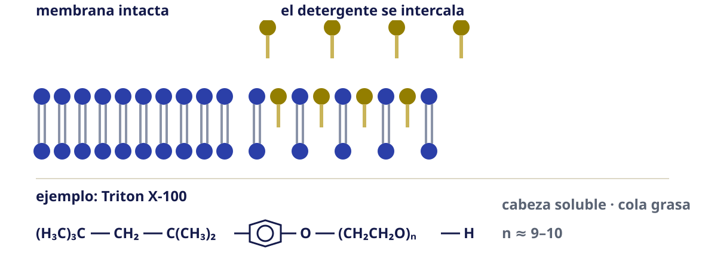
La retrotranscriptasa
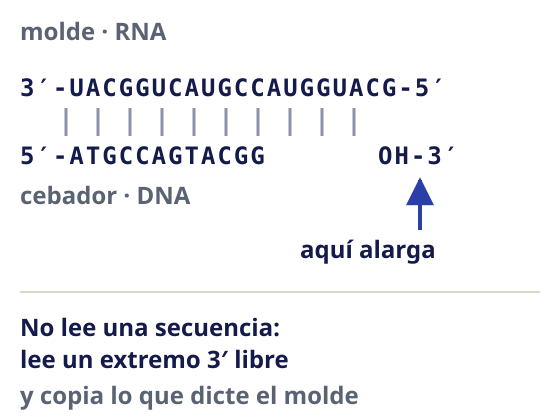
Estructura 4MH8 · Protein Data Bank · arrastra para girar, rueda para acercar
Por qué se lee un extremo y no todo
- El cebador es poli-dT: se ancla en la cola de poli-A
- La retrotranscripción arranca ahí, en el extremo 3′
- Lo que quede lejos de ese extremo no entra en la lectura
El cambio de plantilla
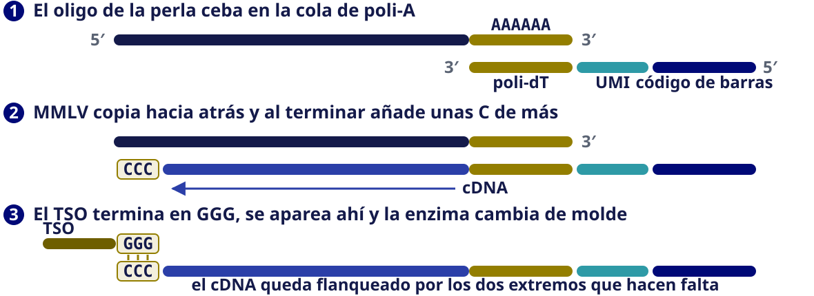
3′ o 5′: la misma gota, distinto extremo
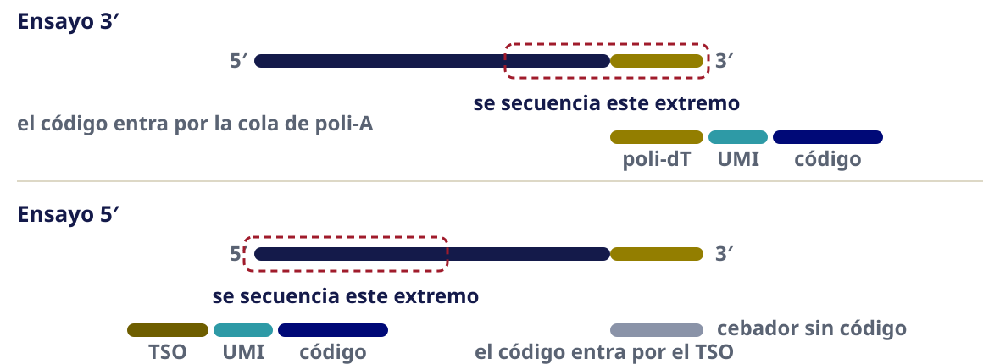
De cDNA a librería: cuatro pasos

La librería terminada
![La librería terminada, dibujada como una barra de nueve tramos de izquierda a derecha: P5, sitio de la lectura uno, código de barras, UMI, poli-dT, inserto de cDNA, sitio de la lectura dos, índice i7 y P7. Debajo, tres corchetes marcan lo único que se secuencia: la lectura uno sobre el código de barras y el UMI, veintiocho nucleótidos; la lectura dos sobre el inserto, unos noventa; y el índice, diez. Al pie se aclara que P5, P7 y los dos sitios de lectura son anclajes que no se secuencian, y que el índice de muestra no lo trae la perla sino que entra en la PCR final.](assets/images/libreria-illumina.svg)
El índice mezcla librerías para secuenciarlas juntas. No mezcla células: eso es multiplexado, y va el jueves 20.
La lectura que sale de todo esto
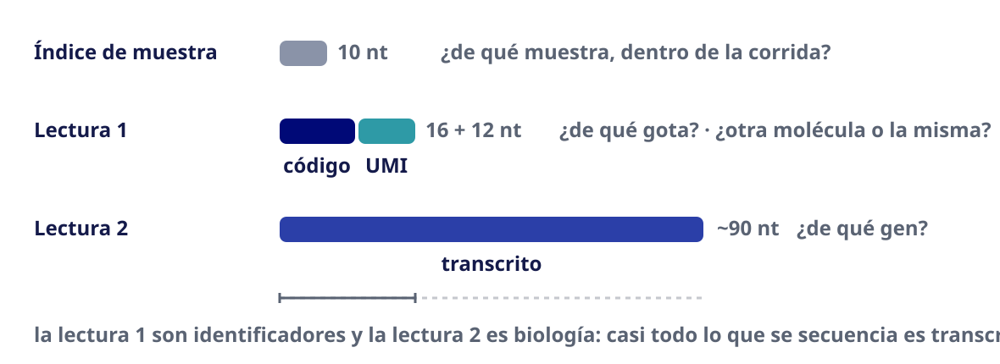
El UMI pasó de 10 a 12 nt entre químicas: al citar un número, decir cuál.
Tres límites de la plataforma de gota
- Solo se ve un extremo del transcrito
- La etiqueta es de la gota, no de la célula: dos células juntas comparten código de barras
- Los dobletes crecen con las células que se cargan: pedir más no es gratis
Tasa de multipletes contra células cargadas: Zheng et al. (2017)
Ejercicio 1 · encuentra las tres piezas
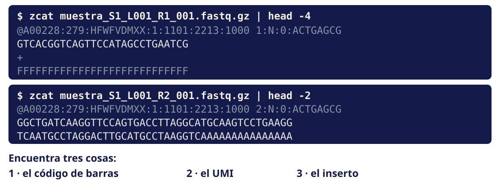
Las tres piezas, y una cuarta cosa
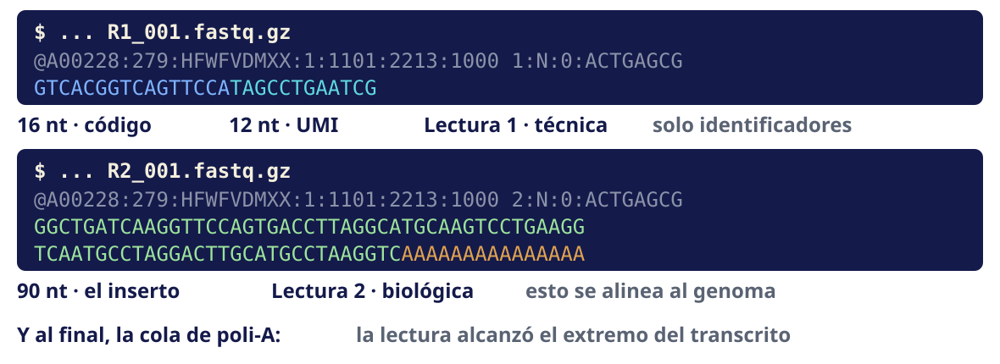
El pozo: una reacción completa para cada célula
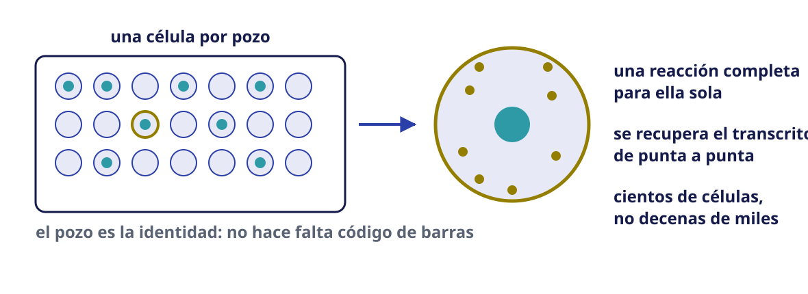
Protocolo de longitud completa: Picelli et al. (2014)
Longitud completa: qué se secuencia, no qué se copia
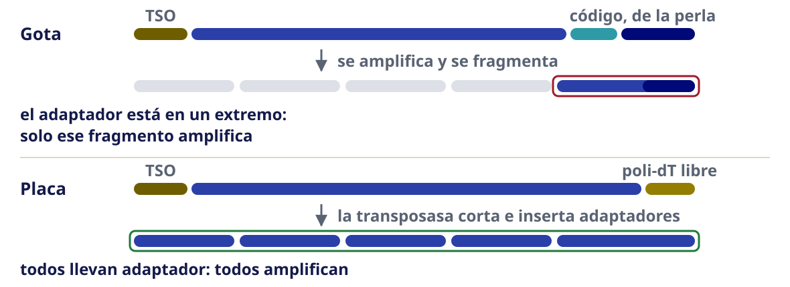
Smart-seq2 no cuenta moléculas
- Usa el mismo TSO y el mismo cambio de plantilla
- Pero no lleva UMI
- Sin UMI no se distingue una molécula nueva de una copia de PCR
Smart-seq3: el UMI dentro del TSO
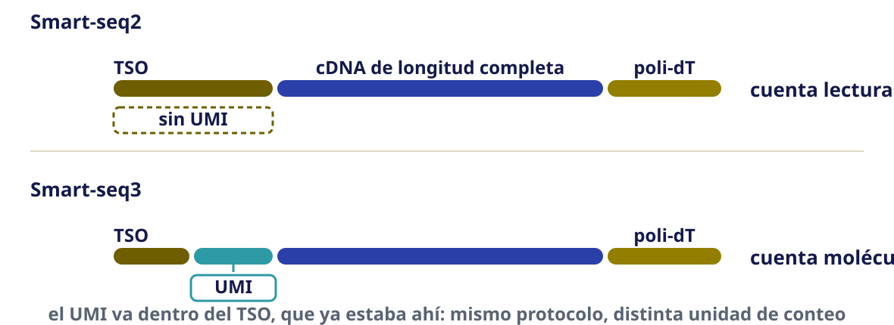
Longitud completa con UMI: Hagemann-Jensen et al. (2020)
Aislar núcleos: el paso que abre la tercera vía
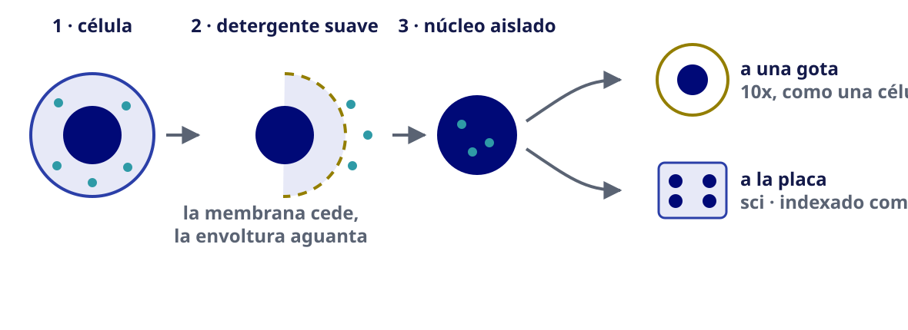
El proceso, ronda por ronda
![Tres filas, una por ronda. Fila uno, retrotranscripción: ocurre dentro del núcleo, que se dibuja entero, y añade el primer código de barras. Entre filas, la indicación de juntar todo y volver a repartir. Fila dos, ligación: también dentro del núcleo entero, y añade el segundo código. Fila tres, lisis y PCR: aquí el núcleo se dibuja roto, con su contenido suelto, y la PCR añade el tercer código. A la derecha de cada fila se ve la etiqueta creciendo, de un bloque a tres. Cada fila indica noventa y seis pozos con unos mil núcleos en cada uno. Al pie: noventa y seis al cubo son ochocientas ochenta y cuatro mil setecientas treinta y seis casillas para cien mil núcleos, un exceso de ocho coma ocho veces, y una tasa de colisión del cinco coma cuatro por ciento.](assets/images/sci-tres-rondas.svg)
Qué le pasa a la molécula
![Tres filas con el estado de la molécula en cada ronda. Fila uno, retrotranscripción: arriba el mRNA en gris con su cola de poli-A en oro; abajo, apareado con esa cola, el cebador de la perla, que lleva poli-dT en oro, el UMI en turquesa y el código de barras número uno en azul. Una flecha marca que la enzima copia hacia la izquierda formando el cDNA. Fila dos, ligación: el cDNA ya sintetizado en azul medio, con el código uno y el UMI a la derecha, y un segundo código azul que se une por ligación en el extremo izquierdo. Fila tres, PCR: la molécula completa, con un tercer código y los adaptadores de Illumina en oro oscuro en los dos extremos.](assets/images/sci-molecular.svg)
Indexado combinatorial: la etiqueta se construye por rondas
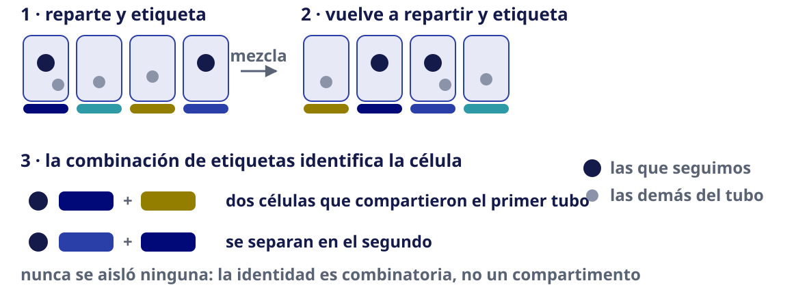
Indexado combinatorial: Cao et al. (2017)
Por qué basta la combinación
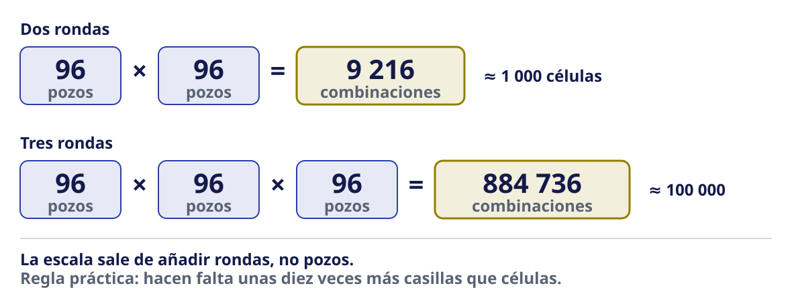
Tres principios de captura
| Gota | Placa | Indexado combinatorial | |
|---|---|---|---|
| Ejemplo | 10x Chromium 3′ y 5′ | Smart-seq2 / Smart-seq3 | sci-RNA-seq |
| Células | miles a decenas de miles | cientos | decenas a cientos de miles |
| Aísla una célula por reacción | sí | sí | no: rondas de códigos |
| Cobertura | extremo del transcrito | longitud completa | extremo del transcrito |
| Costo por célula | bajo | alto | muy bajo |
Gota: Zheng et al. (2017) · Placa: Picelli et al. (2014), Hagemann-Jensen et al. (2020) · Indexado: Cao et al. (2017)
Lo que las tres comparten: la PCR
Qué mide y qué no mide cada química
| Pregunta | 3′ | 5′ | Longitud completa |
|---|---|---|---|
| ¿Qué genes expresa cada célula? | sí | sí | sí |
| ¿Qué isoforma usa? | no | no | sí |
| ¿Cuál es el repertorio TCR/BCR? | no | sí, con ensayo dirigido | parcial |
| ¿Qué variantes tiene el transcrito? | solo cerca del extremo | solo cerca del extremo | sí |
| ¿Miles de células a costo bajo? | sí | sí | no |
Comparación sistemática de químicas: Ding et al. (2020)
La química se elige desde la pregunta
Importante
Ningún análisis recupera después lo que la química no capturó.
Células íntegras o núcleos aislados
| Células íntegras | Núcleos aislados | |
|---|---|---|
| RNA que se mide | citoplasmático + nuclear | nuclear, mucho intrón |
| Tejido congelado | no funciona | sí |
| Tejido fibrótico o adiposo | rendimiento bajo y sesgado | sí |
| Neurona, adipocito, miocito | se pierden o se rompen | sí |
| Firma de estrés por disociación | frecuente | mínima |
| Se recupera | más transcritos por célula | representatividad del tejido |
- No es una preferencia: el tejido decide
- El sesgo de composición no se ve en las métricas de calidad
El ensayo del que venimos hablando
Chromium Single Cell 3′ v3.1, de 10x Genomics.
| Principio de captura | gota |
| Qué extremo lee | 3′ |
| Código de barras de célula | 16 nt |
| UMI | 12 nt |
| Cuenta | moléculas |
Cuatro lecturas del mismo gen
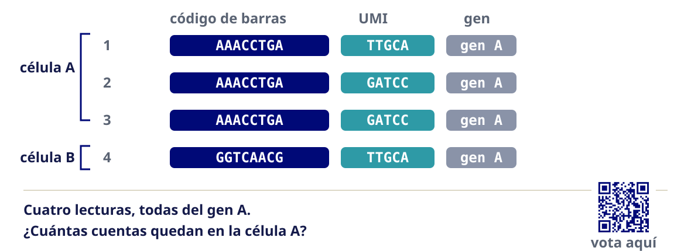
Vota en menti.com/alqdwiujf54r
Cuatro lecturas, tres moléculas
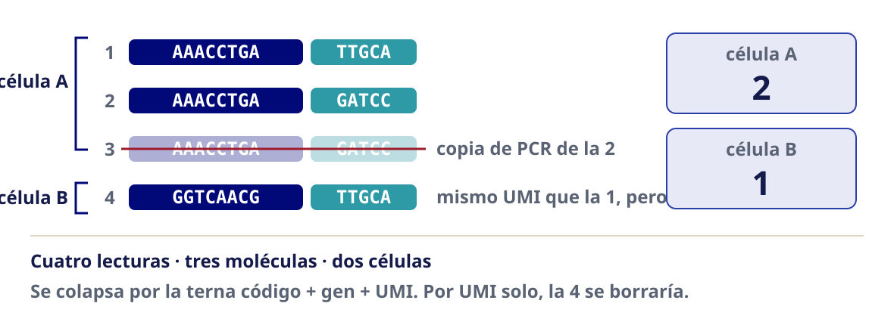
Lo que acabamos de contar
Sin UMI se contarían copias de PCR. Con UMI se cuentan moléculas.
Por eso la matriz de single-cell son cuentas de moléculas, no de lecturas.
Ejercicio 2 · elegir plataforma, en equipo
Un tablero por equipo · la sala se cierra sola
Cada equipo recibe los tres escenarios. Para cada uno: elegir plataforma y química, y justificarlo. Se llena la tabla comparativa en el marco del equipo.
| Escenario | La restricción | |
|---|---|---|
| A | Biopsia congelada de tumor sólido, banco de tejidos | el material ya está congelado |
| B | Sangre periférica fresca, 12 donantes, 2 condiciones | hay muchas muestras |
| C | Organoide con ~400 células en total | hay muy poco material |
Qué tiene que decir cada equipo
- Célula íntegra o núcleo — y por qué el tejido lo obliga
- Plataforma y química
- Qué se pierde con esa elección
- Un supuesto que, si es falso, tira la decisión
Nota
Toda elección pierde algo. Quien no nombra qué pierde, no eligió.
Errores comunes
Elegir célula única cuando la pregunta era de bulk
| Cómo se detecta | Presupuesto gastado y potencia estadística insuficiente para comparar condiciones |
| Cómo se resuelve | Si la pregunta es “cambia la expresión entre dos condiciones” y no importa qué tipo celular, el bulk con réplicas es más barato y más potente. Célula única se justifica cuando importa la composición o la heterogeneidad. |
Usar células íntegras en tejido fibrótico o congelado
| Cómo se detecta | Rendimiento bajísimo, sesgo hacia las células más fáciles de disociar |
| Cómo se resuelve | Núcleos aislados. Se pierde el RNA citoplasmático pero se recupera la representatividad. |
Elegir 3’ y después querer isoformas o repertorio inmune
| Cómo se detecta | Los datos no contienen la información; no hay análisis que la recupere |
| Cómo se resuelve | La química se elige a partir de la pregunta, no al revés. Smart-seq para longitud completa; 5’ con ensayos dirigidos para TCR y BCR. |
| Y lo que viene | La lectura larga en célula única ya resuelve isoformas, variantes estructurales y modificaciones epigenéticas por alelo. No lo vemos en este módulo, pero existe y avanza rápido: Wen & Tang (2026) |
Suponer que más células siempre es mejor
| Cómo se detecta | Muchas células con muy poca profundidad cada una; los genes poco expresados desaparecen |
| Cómo se resuelve | Hay un compromiso entre número de células y profundidad por célula. Se decide con la pregunta y se calcula, no se supone. |
Cierre
Qué mensaje se llevan a casa
- La unidad de medición decide qué pregunta se puede contestar
- La química y el tipo de preparación se eligen desde la pregunta
- Toda elección pierde algo: nombrar qué se pierde es parte de elegir
- La matriz de single-cell cuenta moléculas, gracias al UMI
El jueves 20: diseño experimental
- Hoy se eligió la plataforma. El jueves se decide cómo se reparten las muestras
- Veremos la pseudorréplica: 10 000 células de un donante siguen siendo n = 1
- Cada equipo recibirá un diseño con un defecto deliberado y escribirá una predicción
Importante
Esa predicción se guarda y se revisa de nuevo el 15 de septiembre.
Para leer: las tecnologías
- Plataforma de gota y anatomía de la lectura: Zheng et al. (2017)
- Longitud completa: Picelli et al. (2014), Hagemann-Jensen et al. (2020)
- Indexado combinatorial: Cao et al. (2017)
- Células frente a núcleos: Ding et al. (2020), Slyper et al. (2020)
- Las plataformas comerciales de hoy, comparadas: Elz et al. (2026)
Para leer: el panorama y lo que sigue
Referencias completas (1/2)
Referencias completas (2/2)
Análisis de single-cell RNA-seq · Bioinformática y Estadística 3 · LCG, ENES Juriquilla UNAM · 2027-1